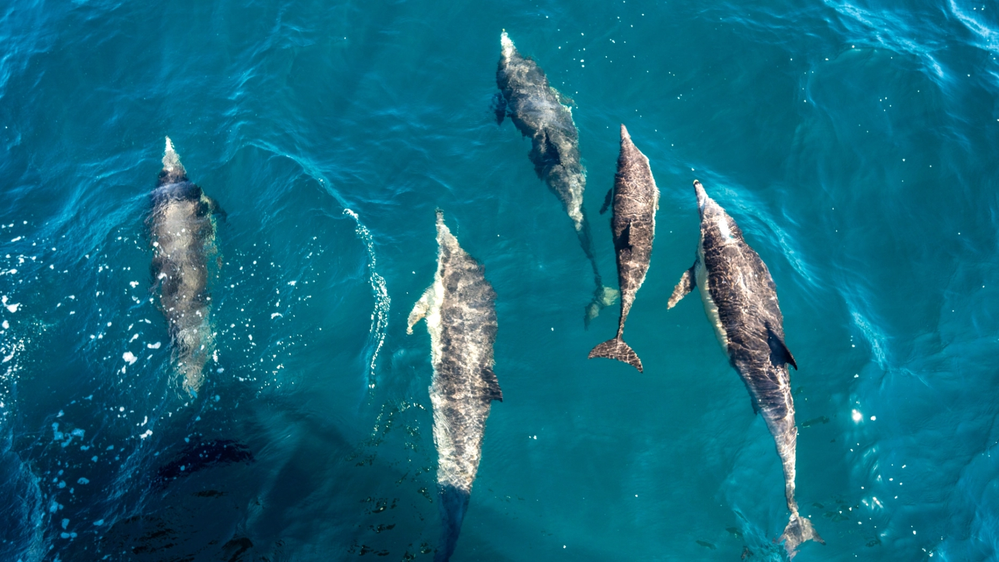
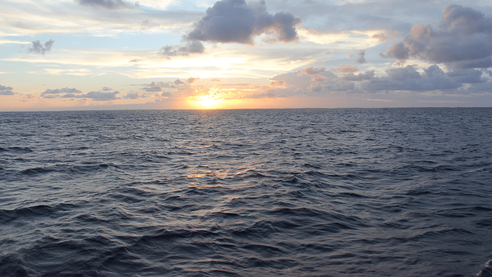
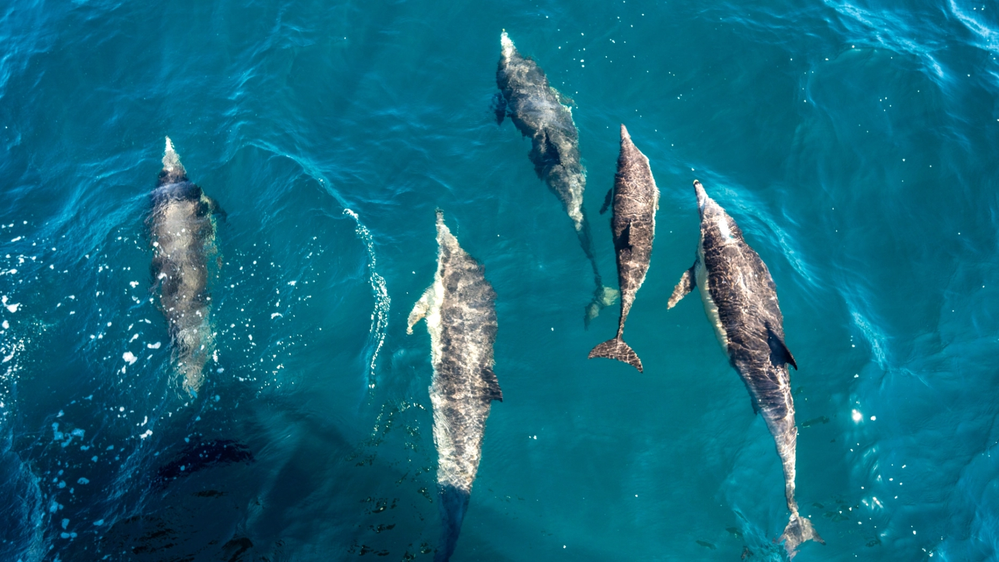
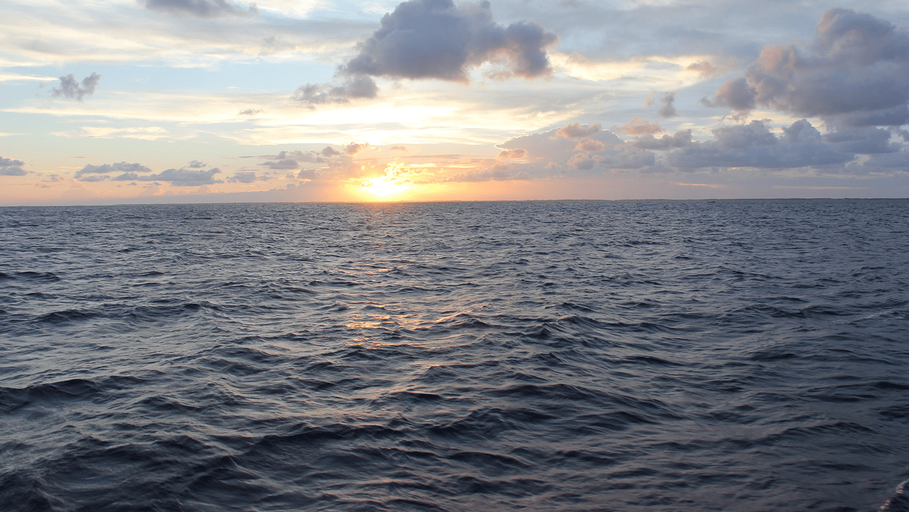

Mission Statement
"Our mission is to protect the world’s oceans by reducing the commonality of trawl fishing as a dominant source of caught fish and by tightening legislation regarding the practice"

"Our mission is to protect the world’s oceans by reducing the commonality of trawl fishing as a dominant source of caught fish and by tightening legislation regarding the practice"
"Trawling is an incredibly popular fishing method that has both massive benefits as well as massive detriments. While trawling is an undoubtedly useful fishing method, we aim to see regulation and accountability turn it from an increasingly unsustainable practice to one that can be safely and humanely performed."
 



The Atlantic ocean as seen from satellite imagery
A coral reef with beaming sunlight and blooming life
A school of dolphins swimming in the ocean
A gentle sunset over the horizon of the open ocean